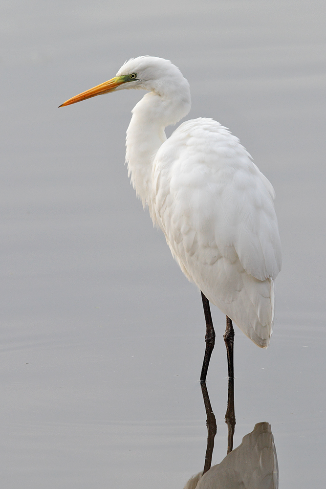

(Ardea Alba)

La garceta grande también conocida como garza blanca (Ardea alba) es una especie de ave de la familia Ardeidae. Esta garza mide de pico a cola entre 80 y 105 cm, su envergadura alar está entre 130 y 170 cm. Su peso oscila entre los 700 y 1,500 g. Es un ave acuática de plumaje blanco, grande y esbelta, que puede alcanzar el metro de altura. Vuela con su largo cuello retraído, pero suele caminar con él estirado. Tiene el pico amarillo y las patas negras con dedos negros (su pico puede oscurecerse y la parte inferior de las patas aclararse durante la época de cría). La especie es parcialmente migratoria. Es una de las garzas más ampliamente distribuidas por el mundo, ya que ocupa todos los continentes salvo la Antártida. En México, esta garza ha sido observada en todos los estados del país. Habita todo tipo de humedales de regiones templadas y tropicales. La IUCN 2019-1 la clasifica en su categoría de preocupación menor. Dentro de los factores de riesgo para esta especie se encuentra la reducción del hábitat por desarrollo urbano.
La longitud de la garza blanca desde el pico hasta la cola oscila entre los 80 y 104 centímetros, posee una envergadura alar entre 131 y 170 centímetros.
El peso se encuentra entre los 700 y 1500 gramos, estando su media alrededor de un kilogramo.
Se le documenta desde el nivel del mar llegando a los 1500 metros de elevación, aun cuando que se le ha visto a mayores elevaciones, llegando casi a los 4100 metros.
Es capaz de hacer demostraciones de agresividad, emitiendo un gruñido que muchos autores describen como graznido.
Los machos son un poco más ruidosos que las hembras, debido a que también estarán advirtiendo a otros machos, la defensa de la zona, de la misma manera se trata de atraer a las hembras.
REGRESAR AL MENU